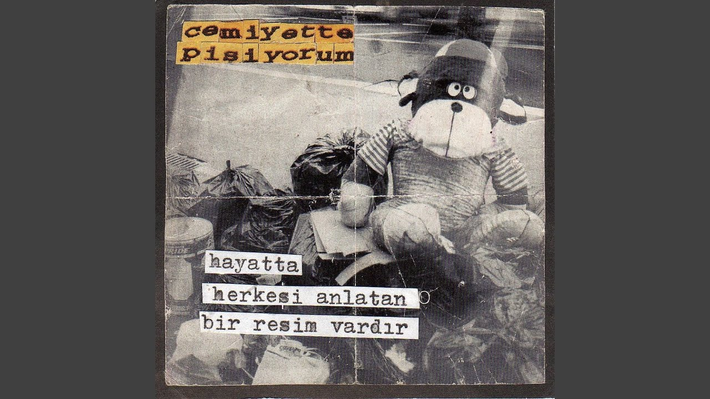

Kayseri'de Doğdum.Hayatimin çoğunluğunu Kayseri'de gecirdim. ilkokulu ortaokulun bir kısmını ve liseyi Kayseri'de geçirdim üniversitesi'yi Sakarya üniversitesinde okumaktayim. Bilgisayar Mühendisliği 1.sinif ogrencisyim. boş zamanlarimin çoğunu muzikle ilgilenerek , gitar çalarak ve şarkı kaydı yaparak geciriyorum. En Çok sevdiğim müzik türü Türkçe PUNK ve En sevdiğim Türkçe Punk grubu Cemiyette Pişiyorum ve Kilink'tir. Çocuklugumdan beri satrançla ilgilendim ve turnuvalara katildim. Özellikle Bilim Kurgu filmlerini çok severim ama En sevdiğim film Gaspar Noe'nin I Stand Alone ve Climax filmidir.Bilgisayar oyunlarıyla aram iyidir ve bir çok oyun oynamışımdır bu yüzden de bilgisayar mühendisliği seçtim ve bilgisayarda oyun alanında ilerlemek istiyorum
